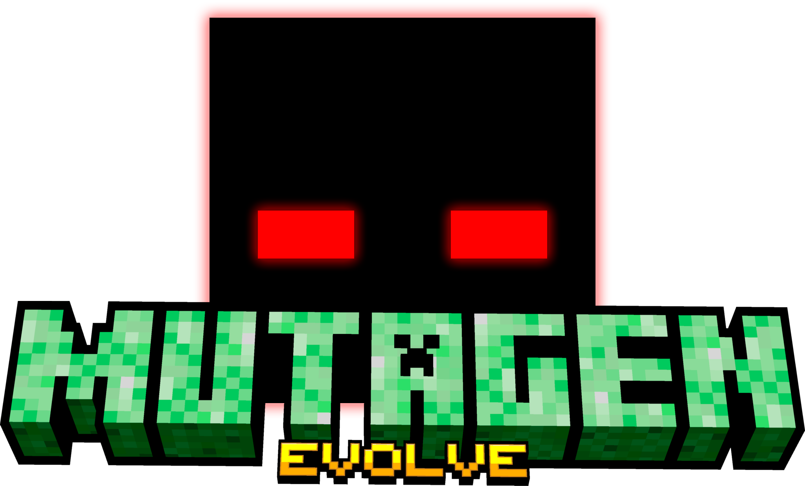

Зберіть зразок
Підійдіть до мобу в Minecraft і використовуйте шприц, щоб зібрати зразок.
Minecraft Java Edition / Early Access 0.2.1
Дослідіть 12 штамів, побудуйте лабораторію та випробуйте здібності та слабкі сторони істот Minecraft.

Геймплей
Підійдіть до мобу в Minecraft і використовуйте шприц, щоб зібрати зразок.
Використовуйте Секвенсор, щоб розблокувати сильніші сироватки. Натисніть G, щоб відкрити генне дерево.
Обробіть його в центрифузі, щоб отримати очищений геном.
Поєднайте геном, основу мутагену та каталізатор у синтезаторі.
Перетворення
З'являється перша пасивна риса.
На твоїй шкірі поширюються плями натовпу.
Ваше тіло починає змінювати форму.
Літаючі види набувають польоту. Безручні форми втрачають оф-хенд.
Ви приймаєте форму мобу. Зміна припиняє розкладатися.
Ваш прогрес може зменшуватися між дозами. Коли ви досягнете повної форми, скористайтеся зворотною сироваткою, щоб повернутися назад.
Каталог штамів
Відкрийте сорт, щоб побачити одну з його сильних і слабких сторін.
Strength Відновлюється в темряві
Слабкість Горить на сонці
Strength Сильніші стріли
Weakness Більш вразливий до вибухів
Strength Стійкість до вибухів
Слабкість Паніка біля котів
Strength Лазить по стінах
Weakness Отримує більше шкоди від вогню
Strength Кроки над повними блоками
Слабкість Вода та дощ шкодять
Strength Дихає під водою
Слабкість Повільно на землі
Strength Вилітає зі стадії IV
Слабкість Вода заземлює
Strength Швидкий політ із етапу IV
Слабкість Горить на сонці
Strength Прискорює ріст культур
Слабкість Їсть лише солодку їжу
Strength Швидший рух і сильніші укуси
Слабкість Їсть тільки м'ясо
Strength Приймається свинями без золотої броні
Weakness Не можна скинути золоті предмети
Strength Підводне бачення та захисні шипи
Слабкість Закінчилося повітря на суші з етапу IV
Minecraft 1.21.1
mods профілю.Pehkui необов’язковий для масштабування тіла.